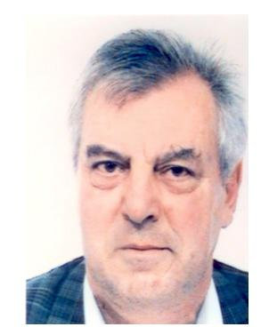

Assurances Berthier expertises est un cabinet d'ingénieurs experts spécialisés dans les expertises techniques pour les industriels et leurs assureurs.
Avec plus de 20 ans d'experience industrielle, puis plus de 15 ans comme experts, les ingénieurs Abex sont spécialisés en Responsabilité Civile et Bris de Machines pour des sinistres conséquents en amiable et en judiciaire.
Basé en Normandie et à Paris, les experts interviennent dans toute la France et à l'étranger.
En tant qu'ingénieurs des Arts et Métiers (ENSAM) les experts maîtrisent les spécialités de la mécanique, depuis la fabrication des pièces métalliques jusqu'à la conception et réalisation de machines d'usinage et de machines spéciales de production.
Par leur experience industrielle, ils interviennent dans les domaines particuliers de l'aéronautique, de la verrerie, de l'industrie automobile...
Noël
BERTHIER
Daniel
BRANLARD
Jacques
HETZEL
Automobile, équipementiers
•Ruptures de poulies de transmission – Rappel - RC - 13,000 k€ - amiable
•Défauts sur pièces d’airbag - RC - 1,500 k€ - judiciaire
Transports routier, maritime...
•Casse d’un moteur de cargo - Martinique - RC - 1,400 k€ - judicaire
•Divers incendies de camions et de remorques - RC - jusqu'à 3,000 k€
Manutentions
•Expert agréé pour un fabricant mondial de grues
Industries agroalimentaire et pharmaceutique
•Pollution de principe actif par des particules métalliques - RC - 11,000 k€
•Malfaçon sur pots en verres – retrait - RC - 2,300 k€ - amiable
Industrie lourde - Incinération
•Défauts d’aciers inox, centrale nucléaire à EPR - Chine - RC - 1,300 k€
•Incendie d’une chaudière de chauffage urbain - RC - 5,500 k€ - judiciaire
Aéronautique
•Dysfonctionnement transmission moteurs d’hélicoptères - RC - 4,200 k€
•Endommagement de l’avion présidentiel français - RC - 350 k€